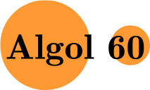
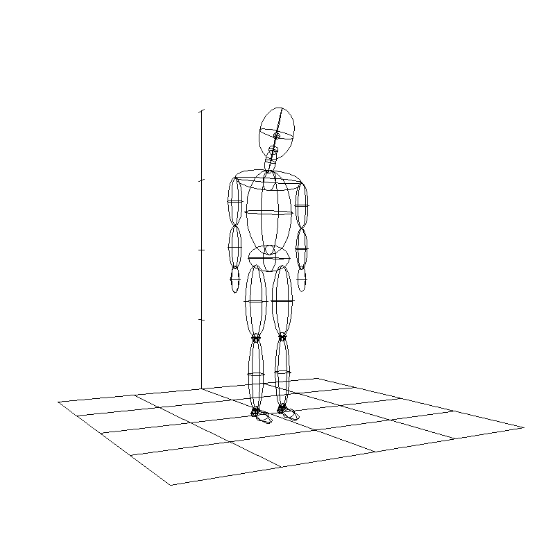

Mobile : 04 1812 0955
Email : jgreen@ionus.com.au
Australian
Masters Preliminary.
University of Western Australia.
Bachelor of Applied Science (Computer Science)
Royal Melbourne Institute of Technology Ltd.
1993 - Present
Director/Owner - Ionus Pty Ltd,
C and some C++
Shell Scripting, Python, Perl
Some Java programming and Java VM programming.
Some JavaScript and HTML
FORTRAN and PASCAL.
Other languages such as Icon,Swift and Kotlin knowledge.
QNX and QNX Windows.
Linux Operating System.
Unix Operating System.
MS Windows
OS-9
Computer language design.
Computer Graphics.
Programming techniques and methodologies.
Reading, Badminton, Jigsaw puzzles.
Member of the Association for Computing Machinery (ACM).
Member of the Institute of Electrical and Electronics Engineers
(IEEE).
Member of the IEEE Computer Society
Member of the Planetary Society
These are some projects I have dabbled with over the years.
|  | Algol Compiler. The Ionus Algol 60 compiler. Current version 1.0 but version 1.1 is nearly complete. |
|  | Bogong Language based on Forth and inspired by Jim Blinn's article. |
Linux Network Developer
HSD
(a) Written tests for testing performance of various applications.
(b) Analysis and study of performance critical code.
Senior Software Engineer - QuintessenceLabs
(a) Developed C KMIP client API product which is used in VMWare's
products. Includes a language to describe Key Management functions.
(b) Other APIs for PKCS#11.
(c) Wrote a simple CI for configuring the QuintessenceLabs Key Manager
product.
(d) Preliminary work on a Java, Python and C# interface to the KMIP
client API.
(e) Tested the Key manager Web UI with Selenium.
Senior Software Engineer - Bureau of Meteorology
Porting C Programs from HP-UX to Linux.
Firmware Consultant - Axxin
Consultant on Firmware matters..
Supply Software for Freestyle Energy
(a) Supplied software to Freestyle Energy.
(b) Software (which I designed and wrote) consisting of:
Updates and improvements to the C compiler, assembler and linker.
Wrote the Librarian to take advantage of the improved linker.
(c) Ports of the Freestyle Virtual Machine (which I designed and wrote)
and Freestyle RTOS (which I co-designed and wrote).
1) Ported the Freestyle VM to uC/OS Operating System including
file system.
2) Ported VM and Freestyle RTOS to PIC24 processor.
3) Ported the VM to Linux.
(d) Developed handlers for various communication platforms such as
Zigbee and Coronis.
Software Developer - Symstream Ltd
(a) Developed and wrote the high availability subsystem for the
Symstream gateways.
System support, software developer - ACTTAB
(a) Wrote software that interfaced ACTTAB to TABCORP for the ACTTAB
wagering system in FORTRAN.
Various Internal Software - Ionus Pty Ltd
(a) Wrote software in PERL to extract data from mini-discs.
(b) Web site set up and development.
(c) Written PHP and Java accessing MySQL on Linux. Simple web
development on Linux and Apache using HTML.
(d) Helping others with HTML, Java and JavaScript.
Supply Software for Device - Omega Industries
Supplied software to Omega Industries Pty Ltd.
Software consisting of:
(a) C compiler for a virtual machine and virtual machine assembler
(b) Virtual machine on a PIC micro processor
(c) Operating System on a PIC micro processor
(d) Flash file system on a PIC micro processor.
(e) Algorithm and support software application running on the VM.
C/C++ Programming - Ericsson Australia
(a) Fixed problems, made enhancements to proprietary software.
Satellite Product Development - NEC Australia
(a) More improvements to the S2 satellite phone production test.
Department of Defense with NEC Australia - Ionus Pty Ltd
(a) Produced a version of the DEFAUSSAT software for doing local
monitoring and tested software for Y2K compliance.
Provided many copies and delivered them to site with testing
and training.
ICONet Project - NEC Australia
(a) Verification and Validation of the Terrestrial Network Manager
(TNM) software with ICONet.
(b) Developed interface to communicate with and configure the new
RPN (Solaris based VME system) for ICONet.
(c) Wrote simulations of loads and performance of the TNM in
Visual Basic
(d) Assisted with the design of the MMI for the TNM for ICONet.
(e) Specification of the MMI screens.
(f) Assisted in the development of the portable load generator and
the implementation of the SS7 messaging.
(g) Coded up the messaging for simulation for MT and MO calls based
on GSM with ICO's specific additions for the portable load
generator (call simulator).
Radio Design and Development - NEC Australia
(a) Updated legacy software for the production testing of satellite
phones.
(b) Designed and implemented a MIB in the S2 satellite phone. The S2
uses OS-9.
(c) Designed and implemented a language to describe the MIB and a
compiler to compile the MIB.
(d) Designed a transmission protocol and messaging similar to SNMP
based on OSI Managed Objects..
Software Developer - Convergent Systems
Worked on a custom GIS for Bell South with Convergent systems in C++.
Supplied Department of Defense through - NEC Australia
Designed, Programmed, Implemented and Delivered a new implementation
of the Defense Australia Satellite (DEFAUSAT) Earth station
monitoring software running on QNX and QNX windows in C.
BHP Petroleum
Ported graphics plotting program written in FORTRAN from DEC VMS to
HPUX.
Telecom Australia
Test coordinator for Telecom's TESAMS system.
Senior Analyst/Programmer - TUSC Computer Systems
Wrote extensive software in FORTRAN and some C on HP1000 RTE-A ,
HP-UX and DOS. Some Pascal programming..
Systems Engineer - Hewlett-Packard
Gave courses in FORTRAN to customers.
Supported HP Technical User Group and held customer accounts.
Also wrote FORTRAN code inhouse to correct problems.
Phone in support for HP1000 RTE-A systems for southern Australia.
Systems Programmer - Department of Lands and Surveys
Wrote relational database system in FORTRAN , Landsat image
processing software in FORTRAN, other applications in FORTRAN.
Considerable FORTRAN code and assembler on PDP-11 RSX-11M and some
UNIVAC 1160
Part-time Tutor (Computing) -
Western Australian Institute of Technology.
Lectured PASCAL to students.
Tutor (Computer Science) -
Royal Melbourne Institute of Technology Ltd.
Taught (lectured) FORTRAN to Engineering students for two years.
Tutored PASCAL to Computer Science students..